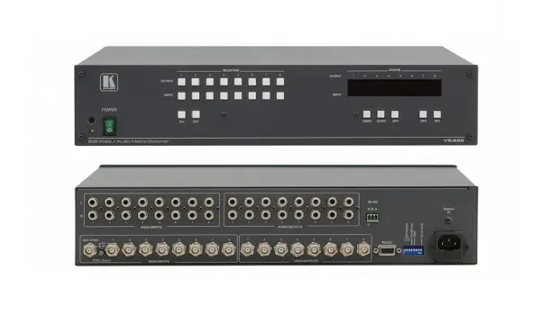

Коммутационное оборудование
Компания Kramer производит коммутаторы и матричные коммутаторы, созданные с учетом технологических новшеств и требований профессионалов к качеству передачи и удобству коммутации сигнала. Высокопроизводительное коммутационное оборудование Kramer позволяет работать как с аудио-, так и с видеосигналом даже в крайне требовательных к качеству сигнала системах: во время масштабных мероприятий или телевизионных трансляций. Коммутаторы отличаются высокой пропускной способностью, мгновенным переключением сигнала, поддержкой множества стандартов и форм-факторов, удобством монтажа и обслуживания и, конечно, неизменной надежностью Kramer.